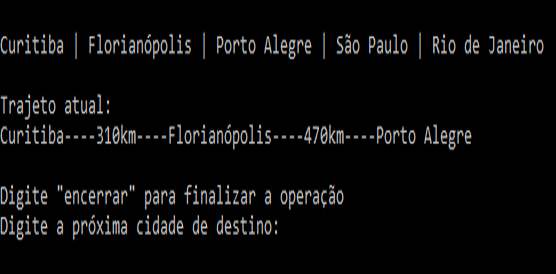
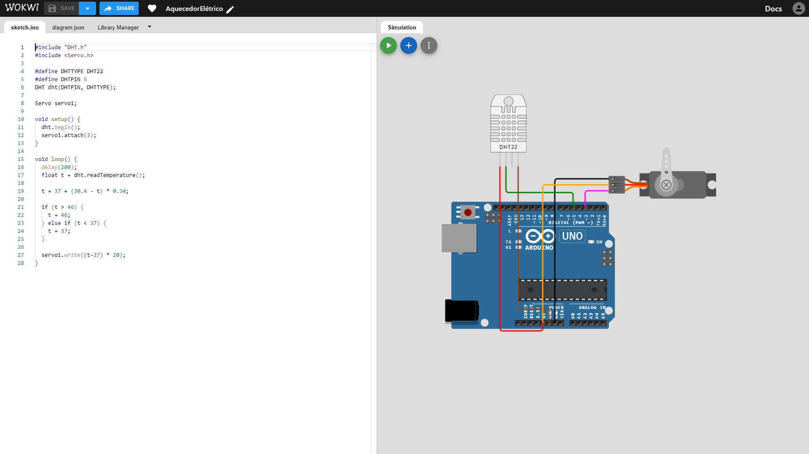

Olá,
Seja bem-vindo(a) ao meu portfólio
Eu me chamo Vinícius Costa Pan, tenho 18 anos, sou estudante de Ciência da Computação na PUCPR e estou apenas me aventurando pelo universo da Computação.
Tenho conhecimento em Python, plataformas como Construct 3 e Processing, lógica proposicional e realizei alguns projetos com esses temas.
Projetos
Jokenpô
Um jogo de Jokenpô com 3 modalidades:
- Humano x humano
- Humano x computador
- Computador x computador
Máquina de Venda de Bebidas
Uma máquina de bebidas com possibilidade de adicionar, editar e excluir produtos do sistemas
Simulador de Viagens
Um código que calcula a distância total de uma viagem entre os estados do Sul e alguns do Sudeste
Tabela-verdade
Uma maneira de calcular todos os possíveis resultados de uma condicional


A Redenção

Um jogo, feito na plataforma Construct 3, no modelo rogue-like no qual o protagonista está preso no inferno e sua única opção é lutar
Uso!
Uma recriação do jogo de ritmo Osu! com uma temática única feita na plataforma Processing
Site de Incentivo ao Turismo em SJP
Um projeto que acabei fazendo em desacordo com a proposta, mas que ficou legalzinho no fim
Máquina de Turing
Uma máquina de Turing que adiciona 3 a um valor binário
Conversão de Bases
Como converter números para bases diferentes? ex.: decimal para binário
Chuveiro Inteligente
Um arduino capaz de identificar a temperatura ambiente e mudar a temperatura do aquecedor de chuveiro de acordo com o valor lido